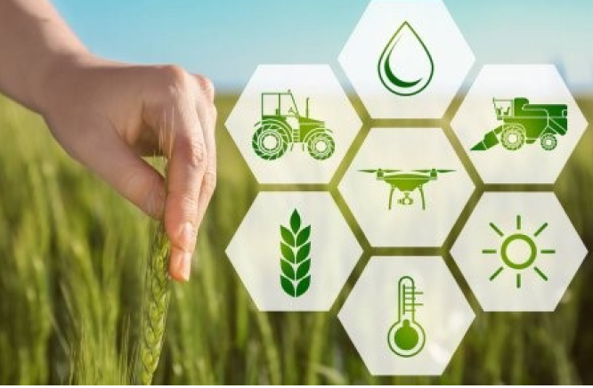
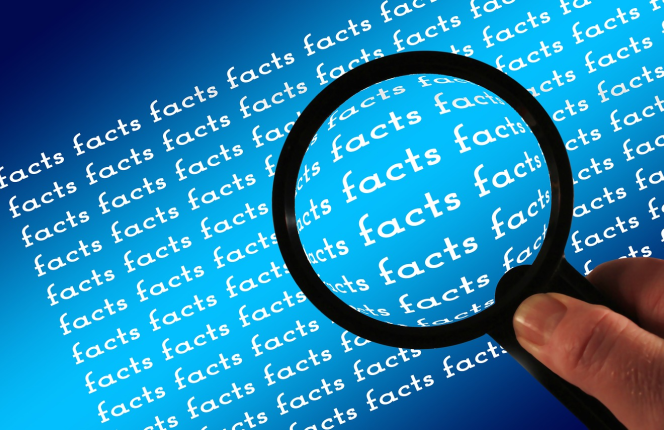

SERVIÇOS
A Agro Cane tem como finalidade revolucionar a maneira em como as decisões são feitas nas áreas de plantio no campo, reunindo dados que indicam a necessidade de diversos tipos de cuidados que uma plantação deveria ter em seus dias meses e anos, auxiliando o agricultor a possuir uma melhor visão de sua colheita.

COLETA
Através de sensores instalados pelo campo conseguimos ter uma dimensão real e exata do que esta acontecendo na plantação, dados são coletatos atravé do Arduino.
ANÁLISE
A análise é realizada por meio de um sistema inteligente de algoritimos onde nossa equipe analisa os dados coletatos de forma coesa e rápida. 
MONITORAMENTO
Após uma analise detalhada dos dados obtidos o sistema irá indicar recomendações para o produtor de acordo com o contexto de sua plantação com o intuito de uma melhor tomada de decisões e planejamento de sua produção.
LUCRO
Seguindo as recomendações você irá ter uma grande otimização do uso da água em seu négocio gerando ganhos e evitando desperdiços juntamente com o auxílio do sistema contra possiveis pragas que prejudiquem suas margens de lucro do produtor.